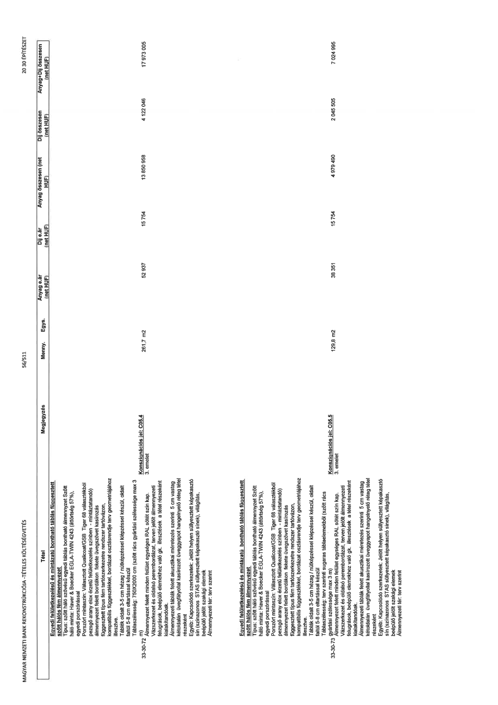

| Tétel | Megjegyzés | Menny. | Egys. | Anyag e.ár (net HUF) | Díj e.ár (net HUF) | Anyag összesen (net HUF) | Díj összesen (net HUF) | Anyag+Díj összesen (net HUF) |
|---|---|---|---|---|---|---|---|---|
| 33-30-72 Egyedi felületkezelésű és mintázatú bontható táblás függesztett szőtt hálós fém álmennyezet Típus: szőtt háló szövésű egyedi táblás bontható álmennyezet Szőtt háló minta: Haver & Boecker EGLA-TWIN 4243 (áttörtség 57%), egyedi porszórással Porszórt mintaszín: Választott Qualicoat/GSB Tiger 68 választékból pezsgő arany elox érzetű felületkezelés színben - mintázandó) álmennyezet felett bordákon fekete üvegszövet kasírozás függesztett típus fém tartószerkezet rendszer tartóvázon, kompatibilis függesztékkel, bordázat osztásrendje terv geometriájához illesztve. Táblák oldalt 3-5 cm hézag / nútképzéssel képzéssel készül, oldalt faltól 5-8 cm eltartással készül Táblaszélesség: 750X2000 cm (szőtt rács gyártási szélessége max 3 m) Álmennyezet felett minden felület egységes RAL sötét szín kap. Vázszerkezet és oldalsó perembordázat, terven jelölt álmennyezeti felugrások, beépülő elemekhez való gk. illesztések a tétel részeként kialakítandóak. Álmennyezeti táblák felett akusztikai méretezés szerinti 5 cm vastag kétoldalán üvegfátyollal kasírozott üveggyapot hangelnyelő réteg tétel részeként Egyéb: Kapcsolódó szerkezetek: Jelölt helyen süllyesztett képakasztó sín (színazonos STAS süllyesztett képakasztó sínek), világítás, beépülő jelölt szakági elemek Álmennyezeti tér: terv szerint | Konszignációs jel: C05.4 3. emelet | 261,7 | m2 | 52 937 | 15 754 | 13 850 958 | 4 122 046 | 17 973 005 |
| 33-30-73 Egyedi felületkezelésű és mintázatú bontható táblás függesztett szőtt hálós fém álmennyezet Típus: szőtt háló szövésű egyedi táblás bontható álmennyezet Szőtt háló minta: Haver & Boecker EGLA-TWIN 4243 (áttörtség 57%), egyedi porszórással Porszórt mintaszín: Választott Qualicoat/GSB Tiger 68 választékból pezsgő arany elox érzetű felületkezelés színben - mintázandó) álmennyezet felett bordákon fekete üvegszövet kasírozás függesztett típus fém tartószerkezet rendszer tartóvázon, kompatibilis függesztékkel, bordázat osztásrendje terv geometriájához illesztve. Táblák oldalt 3-5 cm hézag / nútképzéssel képzéssel készül, oldalt faltól 5-8 cm eltartással készül Táblaszélesség: terv szerinti sugaras táblaelemekből (szőtt rács gyártási szélessége max 3 m) Álmennyezet felett minden felület egységes RAL sötét szín kap. Vázszerkezet és oldalsó perembordázat, terven jelölt álmennyezeti felugrások, beépülő elemekhez való gk. illesztések a tétel részeként kialakítandóak. Álmennyezeti táblák felett akusztikai méretezés szerinti 5 cm vastag kétoldalán üvegfátyollal kasírozott üveggyapot hangelnyelő réteg tétel részeként Egyéb: Kapcsolódó szerkezetek: Jelölt helyen süllyesztett képakasztó sín (színazonos STAS süllyesztett képakasztó sínek), világítás, beépülő jelölt szakági elemek Álmennyezeti tér: terv szerint | Konszignációs jel: C05.5 3. emelet | 129,8 | m2 | 38 351 | 15 754 | 4 979 490 | 2 045 505 | 7 024 995 |
